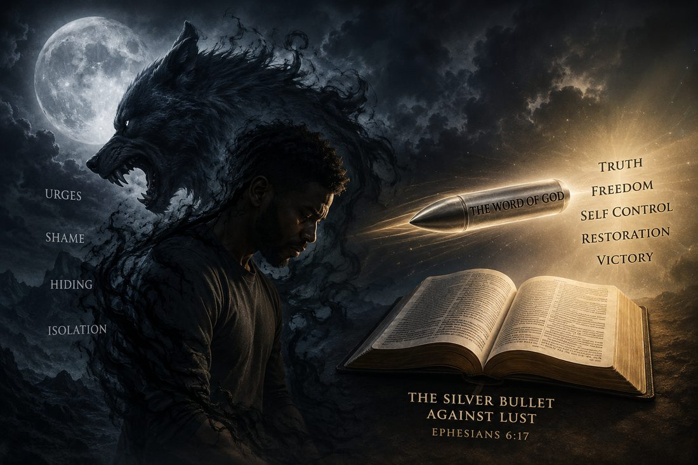

Transforming ?
Trey Walters · Jul 22, 2026

Do you remember those old movies where someone would transform into a werewolf during a full moon?
By day they were loving, kind, and gentle. But when the full moon came, they changed. They became someone almost unrecognizable. Their self-control disappeared. Their desires took over. The monster within ruled them.
Lust can do the same thing.
When lust overshadows a person’s heart, it can awaken urges that once seemed foreign. Someone who genuinely desires holiness can suddenly find themselves pulled toward thoughts, habits, and actions they never imagined. The flesh begins to dominate, and what was once resisted is now pursued.
In many werewolf stories, the person would isolate themselves before the full moon because they knew they could hurt the people they loved.
Isn’t that what lust often does? It drives people into hiding. They withdraw from God, distance themselves from loved ones, and conceal the battle because they know what they’re capable of when the flesh is left unchecked.
But unlike those stories, there is a cure.
The silver bullet is the Word of God.
Every time temptation rises, you must fire the truth of Scripture into your mind and heart. God’s Word doesn’t merely restrain the flesh; it crucifies it. The more consistently you wield it, the weaker lust becomes and the stronger your spirit grows.
The full moon may come again, but so can the silver bullet. Keep it loaded.